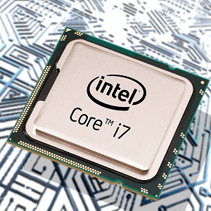

Składamy komputer. Grafika zintegrowana.
Procesory Core i3, Core i5, Core i7 oraz AMD APU (z resztą idea istnienia tych drugich polega na połączeniu CPU i GPU, dlatego też nazwane zostały APU) posiadają wbudowany układ graficzny. Co to oznacza?

Aby powrócić kliknij baner.
Otóż do wyświetlania obrazu nie będzie wymagany zakup osobnej karty graficznej. Dla osób nie grających w wymagające gry jest to bardzo dobry sposób na zaoszczędzenie pokaźnej sumy pieniędzy. Nie oznacza to jednak, że grafika zintegrowana nadaje się jedynie do wyświetlania pulpitu. Owszem, nie są to układy tak wydajne jak karty graficzne przeznaczone dla graczy, kosztujące duże kwoty, ale pozwalają na komfortową pracę z komputerem oraz uruchomienie nieco starszych i mniej wymagających gier. Poniżej prezentuję listę z integrowanych układów graficznych, posortowanych od najmocniejszych do najsłabszych dla każdego producenta osobno.
Overclocking/Podkręcanie
Jest to pojęcie określające ręczną zmianę taktowania procesora przez użytkownika. W procesorach Intela znaczonych literką K, AMD APU z literką K oraz wszystkich procesorach serii FX odblokowany jest mnożnik, co umożliwia znaczne zwiększenie taktowania. Do przeprowadzenia tego zabiegu wymagana jest dobra płyta główna z mocną, najlepiej chłodzoną sekcją zasilania, markowy zasilacz oraz osobno zakupione chłodzenie CPU, gdyż zestawy chłodzące Intela i AMD nie zapewniają odpowiednich temperatur po zmianie taktowań i napięć.
Turbo Boost
W niektórych procesorach intela występuje dodatek zwany turbo boost. Oznacza on posiadaną przez CPU możliwość automatycznego zwiększenia taktowania ponad standardowe w razie potrzeby.
Proces technologiczny
Oznacza rozmiar elementów, z których zbudowany jest procesor. Coraz to nowsze generacje wprowadzają coraz mniejszy proces technologiczny, co skutkuje mniejszym poborem energii i mniejszą ilością wydzielanego ciepła. Najnowsza wprowadzona przez Intela generacja procesorów produkowana jest w procesie technologicznym 14 nm.
TDP
w ten sposób oznaczona jest ilość ciepła, którą należy odprowadzić z procesora. Jest zatem bezpośrednio związana ze zużyciem prądu. Obaj producenci tłumaczą ten termin nieco inaczej. Według Intela oznacza on realną wartość osiąganą w warunkach standardowych, domowych. Natomiast TDP AMD jest wartością osiągniętą w warunkach laboratoryjnych, raczej niemożliwych do spełnienia przez przeciętnego użytkownika. Oznacza to mniej więcej tyle, że procesor Intela faktycznie powinien zużyć tyle prądu, ile deklaruje producent, a w przypadku AMD to zużycie będzie najprawdopodobniej mniejsze.
1.Procesor
